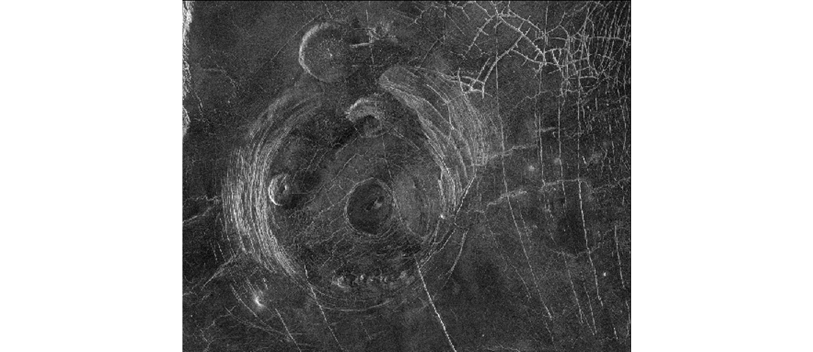
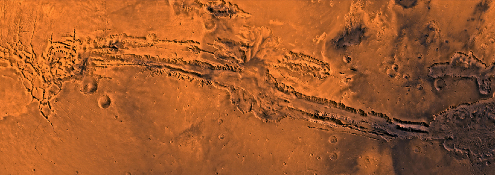
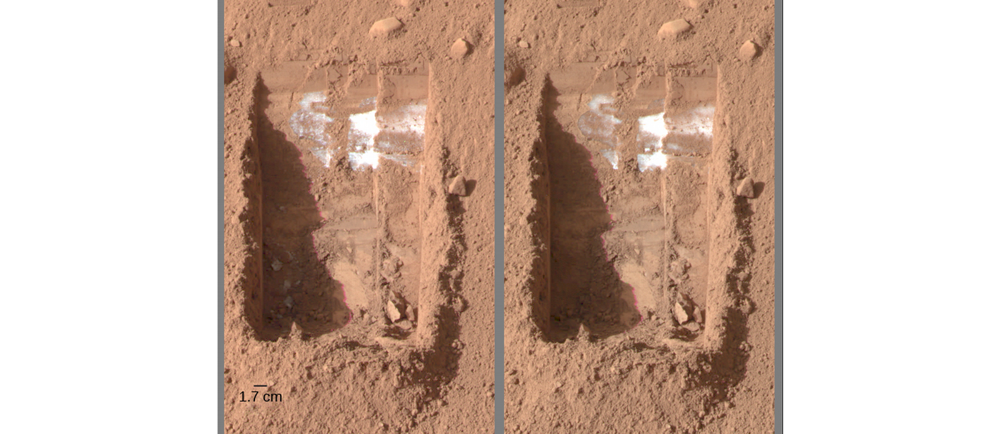
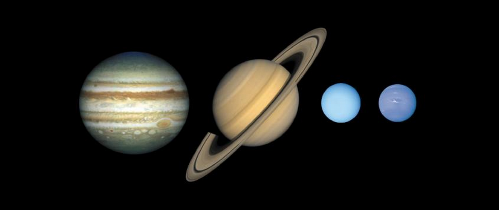
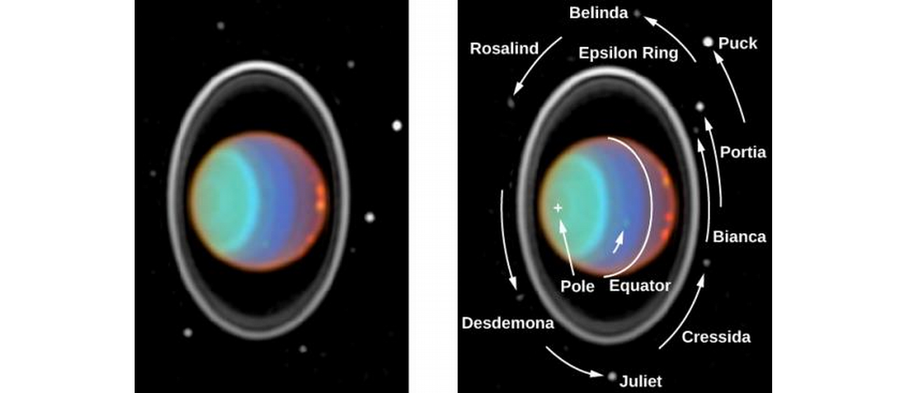
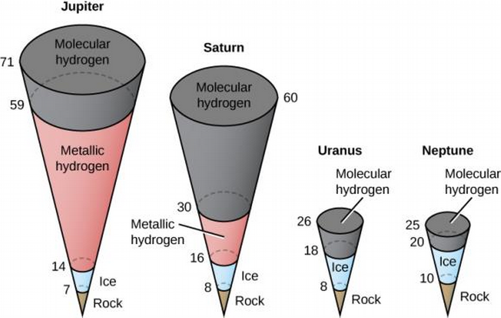
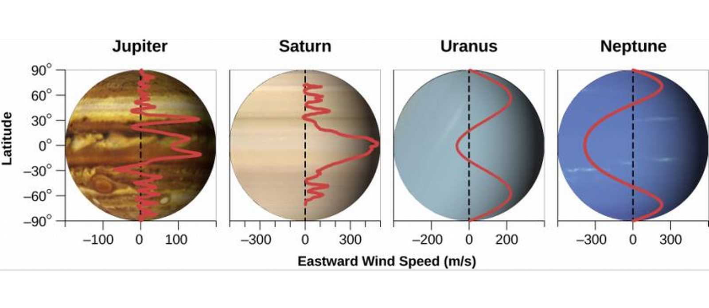

ASTR101 Ch 10-11
Ch 10 - Earthlike Planets: Venus and Mars
The Nearest Planets: An Overview
- Venus and Mars are geologically alive like Earth, and unlike Mercury and the Moon.
- Mars and Venus are among the brightest night sky objects.
- Venus' orbit is 3/4 as wide as Earth's, Mars' orbit is 1.5 times as wide.
- Venus comes closer to Earth (40 million km) than any other planet.
Appearance
- Venus is bright and exhibits the full range of phases.
- Its surface is shrouded by dense clouds 70% reflective.

- Mars is red due to Iron oxides (rust) in its soil.
- Can see from Earth at resolution of 100 km (no topographic features, but see ice caps!).
- Giovanni Schiparelli described "canale" (channels; long straight features) mistranslated as canals, leading to misunderstandings of intelligent life. Larger telescopes clarified there are no canals; the brain tends to see patterns in noise.

Rotation of the Planets
- Determined Mars' by examining motion of permanent surface markings. Sidereal day of 24:37:23 (hour:minute:seconds), close to Earth's! Accurate to within a few hundredth seconds (200 years of measurements).
- Mars tilts by 25°, also close to Earth, and shares similar seasons. Year is twice as long as Earth's, however.
- Venus' retrograde rotation period of 243 days (slow) measured by topographical features that show up in radar signals.
- What's a day on Venus like with the retrograde rotation? A Venus year is 225 Earth days, a Venus day is 243 Earth days—the day is longer than the year! Time for Sun to return to its position in Venus' sky is 117 Earth Days.
- Retrograde Venus spin probably caused by large early collisions.
Basic Properties of Venus and Mars
- Venus mass is .82 Earth's, its density almost identical to Earth's, shares about the same average geological activity. However, its surface pressure is 100 times greater, its temperature is over 850° F.
- Mars is .11 Earth's mass, but is large enough to retain an atmosphere. Long ago, it had a thick atmosphere and seas of liquid water, and a chance of life on the planet!
- Even now, there is a chance of some form of life in Mars' protected environments.
The Geology of Venus
Spacecraft Exploration of Venus
- Half of the 50 spacecraft were successful. Venera 7 was the first probe to land on its surface in 1970, and operated for 23 minutes because of the high temperatures. Several Venera craft followed.
- For a global surface study, need to resort to radar (due to dense clouds).
- 1970s, US Pioneer creates the first global radar map, improved in 1980s by Soviet Venera 15 and 16. Magellan produced 100 m-resolution images using an imaging radar to map Venus!

Probing Through the Clouds of Venus
- No water or ice on Venus, slow wind speeds, so no erosion of features caused by volcanic eruptions and impact craters.
- No evidence of subduction zones or plate tectonics in Venus' history despite convection in its mantle.
- 75% of surface is lava plains, which is not due to tectonics but formed like the Moon through lava eruptions.
- Rising above lava plains are two full-scale mountainous continents, named Aphrodite, about the size of Africa, along the equator, and Ishtar, about the size of Australia and containing the highest mountains, the Maxwell Mountains, 11 km above the lava plains
Craters and the Age of the Venus Surface
- Venus has a crater larger than Chicxulub: Mead, at 275 km, but no craters larger than the lunar impact basins.
- Craters less than 1 km in diameter burn up in Venus' atmosphere, and those up to 3 km break in the atmosphere and cause distorted craters, but we can ignore atmospheric shielding if we only analyze craters 30 km and larger in diameter, caused by projectiles greater than 3 km in diameter.
- Oldest large craters are 300-600 million years old, evidence of geological activity.
- Craters look fresh, without erosion.
- Not a lot of activit since venusian lava plains resurfaced 300-600 million years ago, during a mysterious planet-wide volcanic convulsion.
Volcanoes on Venus
- Many volcanoes, the largest 500 km across and 3 km high (broader and lower than Mauna Loa in Hawai'i), with a caldera (volcanic crater) at the top 40 km across. Volcanoes of various shapes (pancakde volcanoes!) and sizes, ranging the way down to Magellan's resolution.
- Lava that doesn't make it to the surface can bulge up the crust (like the Sierra Nevada mountains in California). These bulges create circular features called coronae.

Figure 4: "Miss Piggy" corona.
Tectonic Activity
- No tectonic plates in Venus, but convection of molten material in the mantle causes stresses on the crust called tectonic forces, resulting in tectonic features such as ridges, cracks, and mountains.

Figure 5: Lowland plains
On Venus' Surface
- Illumination like a heavily overcast Earth day, clouds make sunlight appear red, temperatures that melt lead, 90 bar surface pressure.

The Massive Atmosphere of Venus
Composition and Structure of the Atmosphere
- 96% CO2, 3.5% N2. Earth also once had majority CO2, and Mars has a similar composition (though Venus is 10,000 times more massive).
- Venus has a very dry atmosphere, unlike Earth.
- Troposphere up to 50 km, with Sulfuric acid droplets—formed by combining water and the sulfur dioxide emitted from volcanoes—at higher elevations. Convection currents rise near the equator and fall over the poles. Large pressures even out temperature fluctuations in the lower elevations of the troposphere.

Surface Temperature on Venus
- Venus' surface of 700 K is much hotter than you'd expect from the sunlight that reaches it due to greenhouse effects. The effect is concentrated in Venus, which has nearly a million times more CO2.
- It's possible Venus once had a climate similar to Earth's, with water oceans and its CO2 dissolved in the ocean or rocks. Even a little additional heating could result to increased evaporation of water and gas release from rocks, triggering the greenhouse effect, which in turn triggers more evaporation, in a situation termed the runaway greenhouse effect.
- Once water evaporates, UV rays from the Sun can split it into hydrogen and oxygen atoms, the former can escape, and the latter combine with rocks, in a process that is very difficult to reverse. There's evidence that this is what happened to the water once present on Venus.
The Geology of Mars
Spacecraft Exploration of Mars
- Evidence suggests Mars once had blue skies and lakes of liquid water, and it's a candidate for habitation.
- Again, more than 50 spacecraft launched, half fully successful.
- First visited in 1965 by US Mariner 4 which transmitted photos, surface was mapped in 1971 by Mariner 9 with a resolution of 1 km, the first spacecraft to orbit another planet. Found canyons, polar cap layers, volcanoes, and channels appearing to have been once cut by running water.
- 1970s' twin Viking spacecraft had two orbiters surveying the planet for a safe spot to land two landers on the surface and resulted in multiple high resolution photos and complex experiments.
- In 1990s, Mars Global Surveyor (MGS) landed on Mars and mapped its surface over one martian year, found evidence of ancient running water!
- Odyssee launched in 2003 found a large amount of subsurface hydrogen (probably frozen water).
- In 2008, Phoenix measured water in the edge of the ice caps.
- 2011, Curiosity (1-ton in weight and size of a subcompact car) arrived with plutonium-powered generators (to avoid dependence on sunlight which wavers with dust deposits) to investigate climate and geology and assess past and present habitability.

Figure 8: Mars map from MGS' laser alt-meter.
Martian Samples
- We haven't brought any from Mars (though it's in the planning stages), but there are Martian meteorites on Earth in study by scientists. Large impacts with Mars earlier in its history left fragments in space, a few of which collided with Earth some few million years later. They are verified Martian by their composition.
- Rocks from the Moon have also reached us in the form of meteorites, though we could only identify their origin once we examined rocks on the Moon.
- The Martian meteorites contained water and organic (carbon-based) compounds in them, suggesting water and life on its surface.
Global Properties of Mars
- Just over half Earth's diameter, with an average density of 3.9 g/cm3. No global magnetic field, though surface magnetizations suggest a magnetic field billions of years ago, implying the present lack of conducting liquid material in its core.
- Has continental highlands and widespread lowland volcanic plains like Venus, with a total range of 31 km. Lowland plains look like the lunar maria.
- Southern hemisphere is heavily cratered, northern is younger with plains 5 km lower, a geological division like Earth, the Moon, and Venus.
- Near equator is a high continent the size of North America called the Tharsis bulge, atop which are four great volcanoes.
Figure 9: Mars map from MGS' laser alt-meter.
Volcanoes on Mars
- Lowland Martian plains have same density of impact craters, implying they formed about the same time 3-4 billion years ago.
- Largest Martian volcano is Olympus Mons (Mount Olympus), with a half-kilometer diameter and rising 20 km over the plains—thrice the size of the tallest Earthly mountain, with a volume 100 times greater than Hawai'i's Mauna Loa. The caldera alone is about the size of LA.
- Olympus Mons is only up to about 100 million years old since it has few impact craters, and so may still be active.

Martian Cracks and Canyons
- The Tharsis bulge results in tectonic cracking of the crust. The Valles Marineris ("Mariner Valleys") are a large canyon extending about 5000 km (nearly a quarter around Mars!). It's 7 km deep and 100 km wide, and the entire Grand Canyon could fit in one of its side canyons!
- Valles Marineris weren't made by water, but by tectonic forces.

The View on the Martian Surface
- Surface soil measured to consist of clays and iron oxides (no surprise there), with rocks of the same volcanic origin and composition.

- Found places with sedimentary layers, rock layers formed in the presence of water.
- Even found water frost on the ground during the Winter

- Most winds only a few kph, but Mars can have powerful planet-engulfing windstorms that cover the planet in wind-blown dust.
- Through rovers, found dust devils on Mars rising from convection currents.
Water and Life on Mars
Atmosphere and Clouds on Mars
- Martian atmosphere is 0.007 bar, temperature around -125 °C to 20 °C
- Martian air is approximately 95% carbon dioxide, 3% nitrogen, and 2% argon.
- Proportions like Venus, but thin atmosphere means less total gas.
- High velocity Martian winds are also lower density (weaker), but they raise up dust.
- Types of clouds: dust clouds, water-ice clouds (like Earth's), and CO2 clouds (unlike Earth).
- Water isn't stable in its liquid form in Martian surface conditions.

Figure 14: (C) Wikipedia, by Cmglee, with modifications; CC BY-SA 3.0
- Salt lowers water's freezing point, so salt water can exist on the Martian surface under certain conditions.

The Polar Caps
- Recall Martian caps visible from Earth, and change size with Martian seasons.
- Made of dry ice (CO2) condensed from atmosphere, when temperature drops below 150 K.
- These seasonal caps are thin, compared to the permanent or residual caps.
- Diameter of Southern residual cap is 350 km, Northern 1000 km.
- Southern cap is CO2 and water ice, Northern cap is just water ice.
- Northern cap is 3 km thick with volume of 107 km3.
- Mars seems to have ice age cycles very similar to ours.

Figure 16: The Phoenix spacecraft dug a trench near the North polar cap to find water ice. (C) Study.com.
Channels and Gullies on Mars
- Evidence of ancient liquid bodies of water in three sets:
- Highland equatorial plains contain lots of small 4 billion-year-old runoff channels a few meters deep, 10s of meters wide, and 10-20 km long, characteristic of rainwater runoff.
- Larger outflow channels 10 km or more wide and hundreds long, must have required larger volumes of water than rainfall. Originate from sites with frozen water in soil (permafrost) suggesting ancient flooding.
- Gullies were first discovered by the MGS, and are smaller than the previous two, and much younger, suggesting very recent but brief liquid water activity.
- No liquid bodies on Mars today.

Figure 17: Runoff and Outflow channels.
- Dark streaks (recurring slope lineae) caused by water—spectra show presence of hydrated salts, as through evaporation of salty water, which can remain liquid long enough to flow downstream 100+ m. The source of the water is unknown.

Figure 18: Gullies on wall of Garni Crater.
Ancient Lakes and Glaciers
- Spirit, Opportunity, and Curiosity rovers sought to examine sedimentary deposits of dried-out lake beds for evidence of water.
- Spirit's mission blocked by thin lava flows.
- Opportunity detected sedimentary rocks containing chemical evidence of evaporation of a shallow salty lake, containing hermatite which forms only in watery environments!
- Curiosity found evidence of water erosion in the Gale crater, found actions formed by shallow water.
- Large quantities of ice just below Martian surface covered with dirt and dust.
Climate Change on Mars
- Like Earth and Venus, Mars formed with high temperature due to greenhouse effect of its then atmosphere.
- Its low gravity allowed its atmosphere to escape, lessening the greenhouse effect and lowering its temperature.
- Mars eventually so cold that atmospheric water freezes out of atmosphere, resulting in runaway frefrigerator effect (opposite of Venus' runaway greenhouse effect).
- Water a few meters under Martian surface may be (perhaps salty) liquid with temperature insulated by layer of rock.
The Search for Life on Mars
- Specific experiments to detect life and organic matter on Mars (esp. Viking experiments) have not found any.
- Mars more likely to have housed life long ago; present search focuses on fossils.
Divergent Planetary Motion
- Though they are neighbors and all started with a similar mix of silicates and metals, Venus is now hot and dry, Mars cold and dry, and Earth habitable due to their differing evolutions.
- Better understanding of Mars and Venus' evolution might help stabilize Earth's.
Ch 11 - The Giant Planets
Exploring the Outer Planets
- Among planets, giant planets hold most of the mass.
- Jupiter's mass exceeds all other planets combined.
- Composed of three classes of material:
- Gases: Primarily hydrogen and helium.
- Ices: Solid state compounds forming from oxygen, carbon, and nitrogen (eg, water, methane, ammonia, carbon monoxide, carbon dioxide, etc.).
- Rocks: Least abundant class, includes magnesium, silicon, iron, etc.
- Gases make approximately 98.6%, ice 1.1%, and rock .3% of the outer solar system.
- Outer solar system is reducing, meaning that elements tend to combine with hydrogen first.
- That means oxygen tends to form water (H2O) before it forms things like methane (CH4) or ammonia (NH3).
- This is why giant planet compositions are mostly hydrogen-based gases.
Exploration of the Outer Solar System So Far
- Eight spacecraft (7 from U.S., one from Europe) have penetrated beyond asteroid belt into outer solar system.
- Flight times are years–decades (months for inner solar system).
- Hours of delay for spacecraft to communicate to Earth and be fixed!
- Sun is too far away to provide spacecraft with enough energy.
- Heaters required for spacecraft components, strong radio required.
- 1972-3: Pioneer 10 and 11: "Can we get past the asteroid field and survive Jupiter's magnetosphere (region of magnetic influence)? Pioneer 11 gravity assists to Saturn.
- 1977: Voyager 1 and 2: cameras, spectrometers, magnetosphere measurement devices. Voyager 1 flew to Saturn and Voyager 2 to all the outer planets; Jupiter (1980), Saturn (1981), Uranus (1986), and Neptune (1989) in "Grand Tour" made possible by once in 175-year alignment of giant planets!
- Earth to Neptune is 4.8 billion km. Voyager 2's signals at Earth were weaker than the power it takes to operate a digital watch (10-16 W), and was collected by 38 different antennas on four continents!
Enter the Orbiters: Galileo, Cassini, and Juno
- The spacecraft discussed so far conducted flyby missions (it is what it sounds like).
- Galileo, Cassini, and Juno are orbiting spacecraft!
- Galileo launched 1989, arrived 1995. It deployed a probe onto Jupiter, whose massive gravity accelerated it to 50 km/s (enough speed to cross continental US in under 2 minutes) and heated its heat shield to 15,000 °C. The probe took data as it descended 200 km into the atmosphere for an hour, two hours later Galileo fired retro-rockets to be captured in Jupiter's orbit, to study Jupiter's moons.
- Cassini (U.S. and Europe) launched 1997 and arrived in Saturn's orbit in 2004 to study its rings and moons, deploying an entry probe in 2005 into Titan, which landed on the surface!
- Juno arrived at Jupiter in July 2016 to study the magnetosphere with an eccentric orbit from 4,000 km above clouds to 76,000 km.
The Giant Planets
Basic Characteristics
- Jupiter is 5 AU from Sun with period of ~12 years.
- Saturn is 10 AU from Sun with period of ~30 years.
- Uranus is 19 AU from Sun with period of 85 years.
- Neptune is 30 AU from Sun with period of 165 years.
- …So finding seasonal trends is difficult.
- Jupiter and Saturn share similarities but differ and Uranus and Neptune share different similarities.
- Jupiter could fit 1400 Earths inside its volume, and has the mass of more than 318 Earths, despite a low density of 1.3 g/cm3.
- Saturn is 95 times Earth's mass with an even lower density, 0.7 g/cm3, less than the density of water!
- Uranus and Neptune are about 15 Earth masses with densities of 1.3 and 1.6 g/cm3 respectively.
Appearance and Rotation
- We see gases of ammonia crystals of Jupiter and Saturn, methane clouds of Neptune, and no obvious cloud layer on Uranus from outside of them.

- Can't tell much about spin period from optical data, but can from radio data from its magnetic field!
- Jupiter has period of 9h56, shorter than any other planet! Saturn's period is 10h40, and Uranus and Neptune have about 17h spin periods.
- Earth and Mars had seasons because of the tilt of their spin. Do Jovian planets have seasons?
- Jupiter is tilted by only 3°, so no observable seasons.
- Saturn is tilted 27°, so it does experience seasons.
- Neptune has tilt of 29°, so it has seasons (slower than Neptune).
- Uranus is tilted by 98° (spinning on its side, as are its ring and moon system!).


Composition and Structure
- Jupiter and Saturn theorized to be composed of hydrogen and helium.
- Difficult to discuss inner composition since such pressures are unavailable on Earth.
- Hydrogen becomes a liquid due to pressures inside Jupiter and Saturn, and deeper still becomes a metal, which it never does on Earth. Most of Jupiter's interior is liquid metallic hydrogen.
- Most of Saturn's interior is liquid.
- Uranus and Neptune don't liquefy hydrogen as they are too small.
- Each outer planet has a core of heavier materials (concluded from their gravitational fields); presumably what attracted the gas that became their atmospheres.

Internal Heat Sources
- Collapse of material into their core during formation caused the planets to heat up considerably.
- Jupiter had the most heat (why?).
- Giant planets could still be generating heat with slow contracting.
- Internal heat sources result in the planet having more heat than it would have from the Sun alone.
- Jupiter has the largest internal energy source, 4×107 W, about the same as what it absorbs from the Sun! This makes its atmosphere something between a star's (fully internal energy) and a planet's (nearly all energy from Sun). Mostly primordeal heat.
- Saturn has half this much internal energy, producing twice as much energy/kg as Jupiter—how? Still differentiating; helium is still sinking towards the core, releasing gravitational energy.
- Neptune has a small internal energy source, Uranus has none, and they have about the same temperature. Unclear why they have different internal heat.
Magnetic Fields
- Giant planets have a strong magnetic field and magnetospheres millions of kilometers wide.
- Jupiter emits radio waves more intense at higher frequencies, the opposite of what is expected by thermal radiation alone. This turns out to be synchrotron radiation, radiation emitted by electrons when they are accelerated. Comes from Jupiter's "Van Allen belt", which is many times its diameter.

- Axes of magnetic fields (N and S magnetic poles) differ from the spin axis by 10°, 60°, 55°, and 0° for Jupiter, Uranus, Neptune, and Saturn, respectively.
Atmosphere of the Giant Planets
Atmospheric Composition
- CH4 (methane) and NH3 (ammonia) have been observed in the atmospheres of Jupiter and Saturn by spectroscopic analysis of the reflected sunlight. The more abundant hydrogen and helium were not detected until they were measured by a spacecraft (Voyager) because their spectra don't have easily detected features in the optical range.
- Jupiter and Saturn have similar atmospheric compositions, except that Saturn has less helium due to its precipitation (ongoing differentiation) process.
Clouds and Atmospheric Structure
- Jupiter's clouds range from white to orange, red, and brown, constantly swirling.
- Saturn's clouds have much less swirling and are butterscotch in color.
- Ammonia clouds lie deeper on Saturn and so are harder to spot.

- In Jupiter and Saturn's atmospheres, methane remains a gas but ammonia can condense and freeze, forming clouds on the upper edge of the troposphere.
- Galileo directly sampled Jupiter's atmosphere down to a pressure of 5 bars, by which it should have found water clouds, which it did not find.
- Turns out it went down a part of the atmosphere without clouds, even detecting only far thunderstorms.

- The temperature and pressure on a planet generally rise as you get closer to its center.
- Temperatures rise above the stratosphere because those molecules absorb the Sun's UV light.
- Photochemistry of the impurities in the cloud gases result in their different colors.
- In Saturn, the cloud layers are farther apart (stretched) due to lower gravity.

Figure 25: Cloud structure on Saturn. Dark bands are ring shadows.
- Saturn has a hexagonal pattern on its north pole!

Figure 26: By NASA/JPL-Caltech/Space Science Institute
- Uranus is almost entirely featureless in the visible range.
- Its upper clouds are made of methane rather than ammonia.
- Lack of internal heat source suppresses convection currents, leading to a stable atmosphere with little structure.
- Neptune's upper clouds are also made of methane, and may contain another cloud layer of sulfide ice particles below them.
- Neptune does have vertical convection currents powered by its internal heat source which carry warm gas upwards which form additional clouds 75 km higher; these give Neptune its bright white patterns.

Figure 27: Neptune.

Figure 28: Neptune's clouds.
Winds and Weather
- Air goes from high-pressure regions to low-pressure regions, going through distortions from the planet's rotation.
- Air currents also caused by internal energy source for all Jovian planets except Uranus.
- Jovian planets spin faster, smearing patterns horizontally.
- Jovian planets don't have a hard surface for the storms to rub against and die out, unlike Earth where, eg., hurricanes die out as they come on land.
